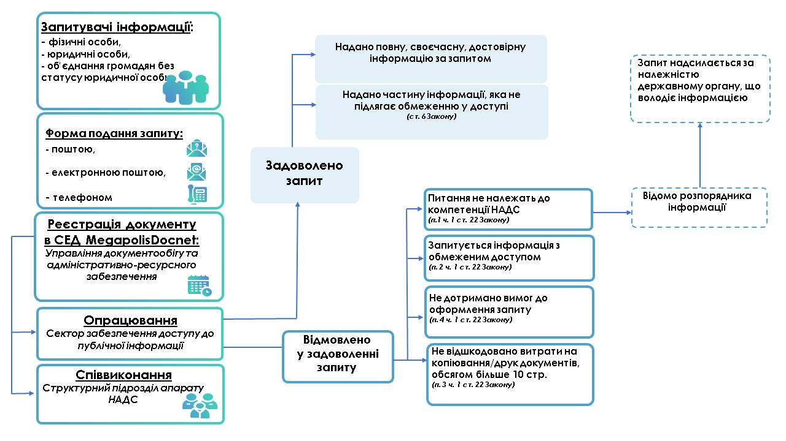

Ласкаво просимо!
На цьому сайті ви дізнаєтеся про різні типи запитів у базах даних: від базових до складних з використанням функцій і параметрів.
Швидкий пошук
Приклади запитів
Як працюють запити
На зображенні показано, як користувач формує запит до бази даних та отримує результат.
Поширені запитання
Що таке SQL-запит?
SQL-запит — це інструкція для бази даних, яка визначає, що саме потрібно зробити з даними: отримати, змінити, видалити або додати.
Які типи запитів існують?
Основні типи: SELECT (вибірка даних), INSERT (додавання), UPDATE (оновлення), DELETE (видалення).
Чи потрібні спеціальні програми для виконання запитів?
Так, для роботи із запитами використовують програми, такі як MySQL Workbench, phpMyAdmin або командний рядок бази даних.
Залишилися питання?
Ми будемо раді допомогти вам!
Задати питання